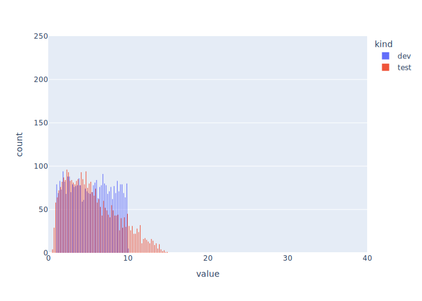
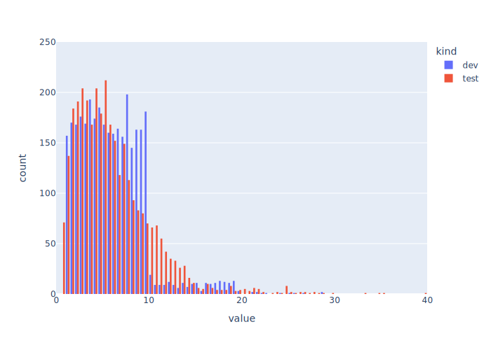
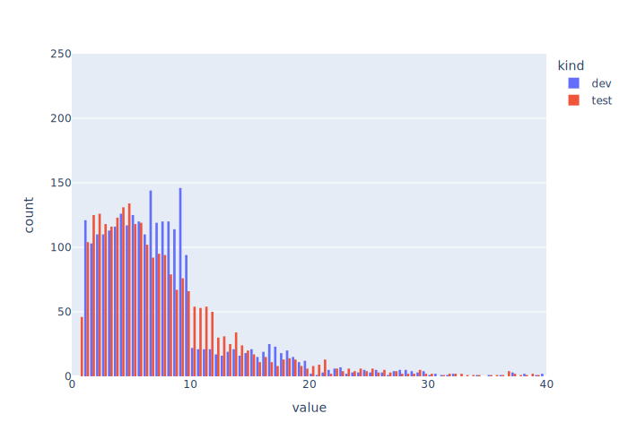
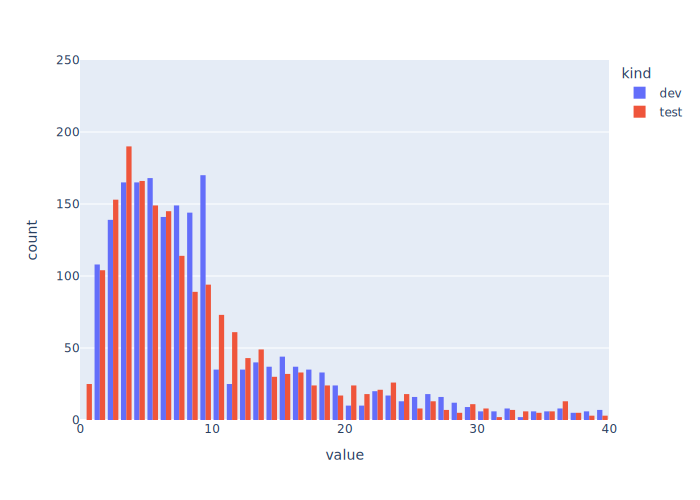

Your company brought in a new CEO,
and she believes that you can’t manage what you don’t measure.
One of the first things she does is dig up historical data
on how long developers and testers have spent fixing bugs over the past year.
When she plots the data quarter by quarter,
she gets the following plots:

First Quarter

Second Quarter

Third Quarter

Fourth Quarter
The number of bugs taking more than 20 hours to close is clearly going up over time,
but why?
There hasn’t been any turnover in the team,
or a major rewrite of the product.
What has changed?
After a bit of digging,
she discovers that developers were reporting time in 10-hour blocks in Q1,
so that sharp cutoff is an accounting artifact.
However,
that doesn’t explain why the number of issues taking more than 10 hours
has slowly but steadily been creeping up from Q2 to the end of the year.
I’ll post the reason tomorrow;
for today,
see what theories you can come up with
and what data you would need to confirm or refute them.
Yesterday’s post pointed out that
it can be hard to distinguish cause and effect from random variation.
One way to tell them apart is to vary the simulation parameters systematically
to see when various phenomena appear and disappear.
For example,
suppose we modify the simulation to account for the fact that
not all tasks are created equal.
Some bugs and features have higher priority than others,
and our team will generally work on more important items before they work on less important ones.
Alongside the Store we have been using to model our work queue,
SimPy offers a PriorityStore that keeps items sorted in priority order.
(The lower the item’s score, the higher its priority.)
Let’s modify the Simulation class to make the development and testing queues priority stores:
The list shown above tells us that there’s a 10% chance of a new task having priority 0,
a 30% chance of it having priority 1,
and a 60% chance of it having priority 2.
When we create a task,
we assign it a priority at random with these weights:
(We need the [0] at the end because random.choices always returns a list of choices,
even when we tell it we only want one value.)
Finally,
when we’re adding a new task to the development queue
we wrap it in a PriorityItem
to pair the task with its priority:
The top (green) line in these four charts is the number of priority-2 tasks
waiting in the development queue.
It grows steadily because developers are basically busy at all times with higher-priority tasks;
it’s only when 80% or more of tasks are higher priority that
we start to see a backlog of priority-1 tasks build up.
I don’t know if I expected this or not,
but I certainly didn’t expect that the testers would always be able to keep up
with tasks of all priorities.
These curves look familiar to me.
In my previous role at Plotly,
I was responsible for managing the backlog of bug reports and feature requests
for the open source libraries.
When I started in April 2025,
nobody had gone through them for several years;
over that summer,
I cleared out enough stale and duplicated items
to get the three main repositories from about 7000 issues down to about 1700.
I then watched as the number grew slowly but steadily over the next twelve months.
Everyone on the team was working hard,
but if your library, tool, or application is useful,
there will always be more work to do than people to do it.
The only “solution” is to be ruthless about labeling
so that you don’t get demoralized.
The main point of yesterday’s post was that
any simple view of a complex system can be interpreted in several ways.
Is work piling up?
That’s good to know
(quick, do you have a plot of how much your backlog has grown over the last year?),
but figuring out why requires usually close investigation.
Here’s another example.
Suppose you’re keeping track of the development and testing backlog over time,
and you get a graph like this:
Your first question is going to be,
“What changed around t=3000 that made the development backlog get five times larger?”
Your second will be,
“And what changed around t=5000 to bring it back down again?”
You might even ask what happened between t=1000 and t=3000 to cause a smaller spike;
was that an early warning that you missed?
Or did the same thing go wrong at t=1000 and t=3000,
but for some reason it was caught and fixed earlier the first time?
Hanlon’s Razor states,
“Never attribute to malice that which is adequately explained by stupidity.”
The statistical equivalent is,
“Never attribute to human action that which is adequately explained by random variation.”
The truth is that nothing remarkable happened to cause the two humps shown in the plot above.
They are just random variations in a random system.
We can see more of this if we run the simulation for 10,000 timesteps instead of 1000:
It looks like the development backlog is slowly increasing,
and that the testing backlog is following that increase with a bit of a lag,
but how confident are you of this?
If we run the simulation even longer,
would you be surprised if the backlogs decreased again?
The data we collect and the dashboards we build
can help us identify things that might need to be explained,
but we have to interpret them in order to create those explanations.
As Elisabeth Hendrickson and Joel Tosi point out in their upcoming book
Signals & Levers,
something as simple as a Shewhart chart
can help you distinguish normal variation from things you might need to worry about.
Yesterday’s post checked our prediction
about where work would pile up.
As a reminder,
here are plots showing the lengths of the development and testing queues
and how much time developers and testers spend working and waiting:
Let’s change a single parameter and re-run the simulation.
We see a few jobs waiting in the testing queue more often,
and more importantly,
that testers are spending most of their time working instead of waiting:
Here’s the key question,
and the main point of this series of posts:
Can you tell from these graphs alone which parameter changed?
The answer is “no”.
It’s clear that something has changed,
but our two-plot dashboard doesn’t give us enough insight for us to know what.
In this case the answer is that we cut the number of testers on the team from 3 to 2
while leaving both developers in place.
Testing still takes an average of 4.5 timesteps,
while development takes an average of 5.5 timesteps,
so the developers still can’t keep the testers busy all the time,
but you can’t tell this from these plots.
Let’s stick to two developers and two testers and make one more change.
The testers are now busy almost all the time,
and the testing queue always seems to have a backlog,
but that backlog doesn’t appear to grow over time:
Again,
you can’t tell from these plots alone what changed.
In this case it isn’t just a parameter:
instead of the testing time being completely independent of the development time,
we’re multiplying the development time by a random number between 0.5 and 1.5
to determine the testing time,
on the theory that things that take longer to develop
usually take longer to test as well.
This is a fundamental change to the model,
but if we didn’t have access to the simulation and its parameters
(which we wouldn’t in the real world),
we would need to look collect different data and look at it more closely
to figure out what the hell was going on.
Yesterday’s post added a second stage to the simulation,
and made a prediction about where work would pile up.
Today,
we’re going to check whether that prediction is correct.
As a reminder,
our system is:
Tasks arrive every 2.0 timesteps.
It takes each of our two developers an average of 5.5 timesteps to complete a task,
while each of our three testers needs an average of 4.5 timesteps to test the result.
This means that developers should complete one task every 2.75 timesteps,
and testers should be able to complete one every 1.5 timesteps.
We should therefore see work piling up in the development queue,
while the test queue should be more or less empty most of the time.
Yup
It only takes a few lines of code
to produce time-series line chart using Polars and Plotly Express:
Sure enough,
the queue of tasks waiting for a developer’s attention grows and grows,
while tasks only wait occasionally (and briefly) for testing:
A little bit more analysis confirms that yes,
our testers are spending a lot of their time waiting for work
while our developers are busy nearly 100% of the time:
Little’s Law
One of the most useful results from queueing theory is
a generalization of the quick-and-dirty math we did at the start of this post
that predicted where jobs would pile up.
Little’s Law states that L = λW, where:
L is the average number of tasks in the system,
λ is the average arrival rate, and
W is the average time each task spends in the system.
For example,
if tasks arrive at a rate of λ = 2 per day
and each spends W = 5 days being worked on,
then on average L = 10 tasks are being worked on at any time.
If each worker does one task at a time, we can infer there are 10 workers.
Most software development teams don’t track any of these three numbers;
I hope this series of posts is convincing you that it’s worth doing.
After yesterday’s refactoring,
we’re ready to make the simulation a bit more realistic
by adding a second stage: testing.
Our updated default parameters will be:
Before we start, let’s make a prediction.
Development times and testing times are uniformly distributed,
so the mean for each are 5.5 and 4.5 respectively (i.e., (1+10)/2 and (1+8)/2).
With two developers,
we should be able to process one task every 2.75 timesteps;
with three testers,
we should be able to process one task every 1.5 timesteps.
We should therefore see tasks piling up in the test queue
because the testers can take them out
faster than the developers can put them in.
The Simulation Class
The first step is to modify the Simulation class that holds all our assets
to create two queues instead of one:
As described yesterday,
Task is basically a bag full of properties.
For convenience,
we have made the task generator a static method of this class
rather than a free-standing function.
In order to test our hypothesis about where tasks are going to pile up,
we will record the length of the waiting-for-development queue in each task
when it is created:
classTask(Labeled):"""A single (passive) task."""@staticmethoddefgenerate(sim):"""Generate tasks and add to the development queue."""whileTrue:yieldsim.timeout(sim.task_arrival())task=Task(sim)task["dev_queue_length"]=len(sim.dev_queue.items)yieldsim.dev_queue.put(task)def__init__(self,sim):"""Construct."""super().__init__()self["arrived"]=sim.nowself["dev_time"]=sim.dev_time()self["test_time"]=sim.test_time()
The Developer Class
The only changes to the Developer are
(a) putting the task in the testing queue once development is finished
and (b) recording more information,
such as the total time this developer has spent working:
classDeveloper(Labeled):"""A single developer."""…constructor…defwork(self):"""Simulate work."""whileTrue:now=self.sim.nowtask=yieldself.sim.dev_queue.get()self["waiting"]+=self.sim.now-nownow=task["dev_start"]=self.sim.nowyieldself.sim.timeout(task["dev_time"])task["dev_end"]=self.sim.nowself["working"]+=self.sim.now-nowtask["test_queue_length"]=len(self.sim.dev_queue.items)yieldself.sim.test_queue.put(task)
Deciding what information to record was
the hardest part of writing this version of the simulation.
Should each developer keep a list of the time spent per task
rather than just summing it up?
That felt redundant,
given that we’re recording development time in each task.
But what about recording which developers do which tasks?
Or keeping track of how much time each developer spent waiting for a task to appear?
In the end we decided to record the latter but not the former.
Each of these decisions constrains what questions we can ask about our development process.
One of the reasons to use a tool like Swarmia is that
they have thought through these questions
and figured out what to collect in order to get useful answers.
The Tester Class
Each tester takes jobs from the testing queue,
spends some time working on them,
and records a few statistics.
The code is almost the same as that for a developer,
but after reorganizing it a couple of times
we decided that two separate classes would be easier to understand
than one class with a couple of if statements to control behavior:
classTester(Labeled):"""A single (active) tester."""def__init__(self,sim):"""Construct."""super().__init__()self.sim=simdefwork(self):"""Simulate work."""whileTrue:now=self.sim.nowtask=yieldself.sim.test_queue.get()self["waiting"]+=self.sim.now-nownow=task["test_start"]=self.sim.nowyieldself.sim.timeout(task["test_time"])self["working"]+=self.sim.now-nowtask["test_end"]=self.sim.now
The Main Driver
We haven’t shown main in a while,
so here is what it has become:
defmain(params):"""Main driver."""# Handle command-line arguments and parameters.args=parse_args()update_params(params,args.params)random.seed(params["random_seed"])# Create and run the simulation and its processes.sim=Simulation(params)sim.process(Task.generate(sim))for_inrange(params["num_developers"]):dev=Developer(sim)sim.process(dev.work())for_inrange(params["num_testers"]):tester=Tester(sim)sim.process(tester.work())sim.run()# Report results.log=make_log(sim)ifargs.table:table=PrettyTable()table.field_names=log[0]table.add_rows(log[1:])table.align=TABLE_ALIGNMENTprint(table)else:csv.writer(sys.stdout,lineterminator="\n").writerows(log)
The Output, and Why
Running the simulation with the default parameters shown earlier
produces this output:
This is not the most readable way to format the output for human consumption:
it would be more natural to store the simulation parameters in a two-column table,
then use another table with ten columns for tasks
(one for the ID, the others for arrival time, queue lengths, development time, and so on).
However,
there isn’t a standard format for storing multiple tables in a single text file.
Our options are therefore:
Create multiple output files for each simulation,
which would be a pain to manage.
Use JSON or YAML,
which would be even less readable than the four-column output shown above.
Create a multi-sheet spreadsheet or use a binary format like SQLite or HDF5,
none of which play nicely with version control.
Having all the output in a single file will make it relatively easy to build analysis tools:
we can load all the data from a single simulation into a single dataframe,
then filter to pull out data for tasks, developers, and testers,
and finally pivot it to create a wide table for each.
We’ll tackle that tomorrow,
and then see if our hypothesis about developers being a bottleneck is true.
After yesterday’s experiments with rework
I was going to spend a post or two building some charts,
but apparently people find a task-centric simulation less natural than a worker-centric one,
so instead I’m going to do some rearchitecting.
Parameters
Let’s start by going back to a pool of developers doing tasks one at a time without rework.
As before,
we’ll define some default parameters,
including a random number seed to ensure reproducibility:
and override the default parameters.
(You can see the function in the source code.)
Bundling Simulation Elements
As our simulation becomes more complex,
we’re going to have more assets to manage:
pools of developers,
a work queue,
and eventually some testers and maybe even a manager or two.
Rather than passing a dozen objects around,
let’s define a Simulation class to store them all:
To save ourselves from repeatedly needing to type sim.env,
this class provides pass-through methods for the simulation environment’s key methods and properties.
And since it is storing the simulation parameters,
it seems like the logical place to put the code
that uses those parameters to generate task arrival times and durations.
Tasks
This version of the simulator has active workers and passive tasks,
i.e.,
the workers are going to be processes that act on tasks.
A task is therefore just a sack full of properties like
when it arrived,
how long it takes to complete,
when work on it started,
and when work was completed:
classTask(Labeled):"""A single (passive) task."""…morestuffwillgohere…def__init__(self,sim):"""Construct."""super().__init__()self.arrived=sim.nowself.duration=sim.task_duration()self.started=Noneself.completed=None…morestuffwillgohere…
Note that Task is derived from a generic class called Labeled.
This class automatically gives each instance of Task a unique integer ID
and keeps a list of all the tasks created so far;
if you’re interested,
you can see the magic in the source code.
Where Do Tasks Go?
Before we move on to modeling developers,
let’s define a generator to create new tasks
and give the simulation a place to store them.
For the latter,
we will use a SimPy Store,
which provides a queue with put and get methods:
We then define a generator to add new tasks to this queue at random intervals.
This generator could be a free-standing function,
but we’re likely to want to add other generators to the simulation in the future,
so let’s make it a static method of the Task class instead:
As we explained in the first post in this series,
generate’s use of yield means that it isn’t a regular function.
Instead,
it creates a generator that SimPy can suspend and restart as often as it wants.
Each time around the while loop,
generate calls sim.task_arrival() to generate a random delay,
then calls sim.timeout() to create an object that means,
“Please suspend this generator for this length of time.”
The first yield inside the loop passes that object to SimPy,
which parks the generator until that much simulated time has passed.
When the generator resumes,
it creates a new task object and adds it to the queue of pending work.
My first implementation of this function had a bug:
it called sim.queue.put(task) but didn’t yield the result.
It took me a couple of minutes to remember that
a SimPy Store can have a limited capacity,
and that an attempt to add a new item to a Store will block
until there’s room for it.
sim.queue.put(task) therefore doesn’t actually add the object to the store;
instead,
it creates a temporary object that means,
“Please add this to the store when there’s space.”
The generator has to give that temporary object to SimPy with yield
so that the framework can suspend the generator if necessary.
Our work queue has infinite capacity,
so the generator will never block waiting for space,
but we still need to use yield.
Modeling Developers
With all that in place,
modeling each developer as an active process is fairly straightforward:
classDeveloper(Labeled):"""A single (active) developer."""def__init__(self,sim):"""Construct."""super().__init__()self.sim=simdefwork(self):"""Simulate work."""whileTrue:task=yieldself.sim.queue.get()task.started=self.sim.nowyieldself.sim.timeout(task.duration)task.completed=self.sim.now
As with Task,
we derive Developer from Labeled so that
each developer will automatically have a unique integer ID.
Developer.work repeatedly gets a task from the work queue
(blocking if necessary until one is available),
records the task’s start time,
suspends itself for some simulated length of time,
and then records the task’s completion time.
Logging
Once the simulation is done,
we’re going to want to look at how many tasks were completed
and how long tasks spent waiting for a developer:
defwrite_log(stream):"""Write task details as CSV."""log=[("kind","id","duration","arrived","started","completed")]log.extend(task.log()fortaskinLabeled._all["Task"])csv.writer(stream,lineterminator="\n").writerows(log)
Labeled._all["Task"] is a list of all the task objects created so far
(again, see the source code if you want details),
while task.log() is just:
classTask(Labeled):deflog(self):"""Convert to loggable entry."""return("task",self.id,log_fmt(self.duration),log_fmt(self.arrived),log_fmt(self.started),log_fmt(self.completed))
we can see that work started on the first three tasks as soon as they arrived,
that work started on the next two after a delay but didn’t finish by the time the simulation ended,
and that the last task wasn’t even started.
Some Introspection
Is this worker-centric design better that the previous task-centric design?
It was certainly easier to write,
but that’s probably because I learned more about SimPy
and thought through design questions
while working on the earlier versions.
The real test is whether you, the reader, find it easier or harder to follow.
If you have an opinion,
please reach out.
In yesterday’s post we started collecting data from our simulation,
and discovered that our metrics will always give us numbers,
but those numbers might be garbage if we’re measuring the wrong things or the wrong way.
In this post we’ll make the simulation more realistic
by taking into account the fact that most first attempts to fix a bug
either don’t fix it or introduce new bugs.
Rework
Let’s introduce a new parameter to specify
the probability that a task needs to be re-done.
For the moment,
we’ll assume this probability doesn’t depend on
how many attempts have been made to finish the task so far.
While we’re at it,
we’ll introduce another parameter to specify
how many times we want to run the simulation:
Next, we introduce a loop in simulate_task.
Each time around the loop,
we get a developer,
spend some time on the task,
and then check if we’re done.
If we are,
we mark the task as completed and break out of the loop;
if not,
we go around the loop again.
defsimulate_task(params,env,developers,task):"""Simulate a task flowing through the system."""whileTrue:withdevelopers.request()asreq:yieldreqtask.start(env)yieldenv.timeout(task._duration)task.end(env)ifrandom.uniform(0,1)>=params["rework_probability"]:task.completed()break
If we run our simulation a few times for 100,000 timesteps with two developers,
we complete an average of 14,550 tasks,
which works out to about 13.7 timesteps per task.
That’s about 40% of the 36,000 tasks we complete in the same time without rework,
and gives us a baseline against which to compare
a more interesting variation on this model.
Keeping the Same Developer
When a task needs to be redone,
the code shown above always grabs the next available developer.
In most development teams,
though,
the same developer would keep working on the task.
We need to make two changes to the simulation to capture this.
First,
we create a FilterStore instead of a Resource to represent
our pool of developers:
The difference between the two is that FilterStore allows us to specify
a test or check that a resource has to satisfy when we claim it.
Here’s the modified simulate_task that makes use of that:
defsimulate_task(params,env,developers,task):"""Simulate a task being re-worked by the same developer."""dev=NonewhileTrue:ifdevisNone:dev=yielddevelopers.get()else:dev=yielddevelopers.get(lambdaitem:item._id==dev._id)task.start(env)yieldenv.timeout(task._duration)developers.put(dev)task.end(env)ifrandom.uniform(0,1)>=params["rework_probability"]:task.completed()break
Initially,
the task isn’t associated with a developer
so dev is set to None.
The first time around the loop,
we use developers.get() without a test to claim a developer.
After that,
we always re-claim the same developer
by passing a function to developers.get() that says,
“The only developer we want is the one with the same ID.”
We then do some work,
put the developer back in the pool,
and check to see if we’re done with this task or not.
Does It Make a Difference?
So here’s our question:
does this policy change the total number of tasks completed or not?
On the one hand we could argue that it would
because we wouldn’t be taking full advantage of idle developers.
On the other hand,
our developers are currently working almost 100% of the time,
so there aren’t actually idle cycles going to waste.
The answer is that under the assumptions baked into our simulation
this change in policy doesn’t have an impact on the total number of tasks that are completed.
If we increase the number of developers
and lower the rate at which new tasks arrive,
though,
that answer changes:
if developers do have idle cycles,
having developers “own” tasks is less efficient
than allowing whoever’s free to work on whatever needs done.
Of course,
that model doesn’t take into account the ramp-up time
that real developers need to familiarize themselves with new problems.
(Putting it another way,
it doesn’t account for the time saved by having someone who understands the problem
go back to it.)
We could add another parameter to our model and another few lines of code to capture this,
but before we do that,
we need to put some better analysis machinery in place.